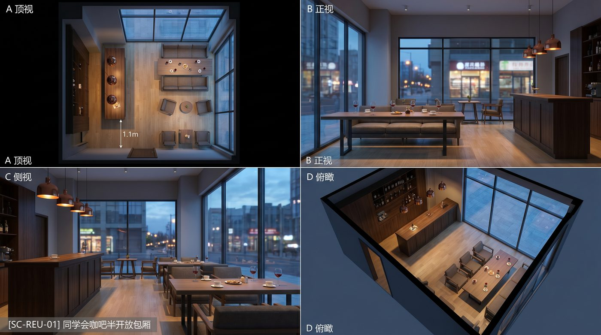

CH-001
陈云峰
男主 · 23–38 岁
凤凰男气质，肯吃苦，自诩背负家族跃迁使命；对外「老好人」，对内逐步失守，终落马入狱。
01 · SYNOPSIS
一场同学会，引出一个人从白衬衫到蒙尘的完整弧光。
同学会上，同窗起哄夸赞处级干部陈云峰「实力担当」。靠窗的苏晚从从容观望渐入思虑；话题落到「金童玉女」旧情，她流露无奈与惋惜，坠入回忆。
回忆中：泡图书馆、考公苦读、二叔资助、林荫道誓约、洗净的白衬衫与入职证照——风筝线仍绷着。回神后现实加速：橱窗腕表、家宴坚守、灌酒送礼、决裂碎镯、商务包厢围猎。醉后梦中搓不净领口污渍，敲门声切断一切——纪检亮证带走。
终章狱中叠化少年白衬衫与风筝，字幕落定两行点题。
02 · CHARACTERS
定稿角色。主轴：云峰失守 × 苏晚守线。
男主 · 23–38 岁
凤凰男气质，肯吃苦，自诩背负家族跃迁使命；对外「老好人」，对内逐步失守，终落马入狱。
女主 · 23–38 岁 · 同学会素裙 / 校园清纯
同窗恋人，清醒通透；从陪伴到劝诫到决裂，守住底线，是道德与情感的双重镜子。
攀附 / 附和层
甲带头烘托「一人得道」；乙丙丁完成「能办事」佐证链与舆论包围。
女性层次
避免苏晚孤立入画；戊解围式八卦，己邻座附和。
资助兼裹挟
从红包恩情到灌酒送礼，推动底线崩塌。
围猎核心
包厢酒局、地块请托；以坠落期服化与茅台光对位围猎场。
景深 / 不可记脸
吧台与休息区散谈层，禁撞脸主角，烘托同学会通透社交场。
视觉锚点 · 考公少年
洗净领口与申论卷：终章叠影与纪检切断前的最后对照物。
03 · CREDITS
电影工业署名 · 政府展示口径。
04 · CONCEPT
用一件白衬衫，写清「边界如何松动」；用一根风筝线，看见底线如何绷断。
寒门起跑时的洁净与克制。领口从扣紧到敞开，是初心从守到失的可视化轨迹。
光里绷成一根细亮的线——远看是少年意气，近看是不可逾越的底线。
终不可湔。初心易得，始终难守；权力无界，终有尽时。
本片不以猎奇酒局取胜，而以日常可感的松动过程完成警示：办入学、打招呼、收礼表、替人托底——每一步都「说得通」，合在一起却走向不可挽回。
05 · PLOT
六幕结构 · 成片总长以剪辑为准，勿用加速对白压缩语速。
日咖啡馆攀附闲谈 → 日夜自然叠化 → 夜包间追问金童玉女；苏晚：从容→思虑→无奈→惋惜。
图书馆、出租屋、二叔人情桌、林荫道、录取誓约、证照白衬衫、郊外风筝——线仍紧绷。
橱窗腕表迟疑；家宴以茶代酒；二叔灌酒送礼表扣上手腕。
家中香烟、表盒、劝诫失败；手镯碎地——室内断线。
旋转包厢酒局；梦中搓不净领口；敲门 · 纪检带走。
暗廊叠影少年白衬衫；终章宋体两行点题。
06 · PIPELINE
内容工业与政府场投放串成一条可审阅链路。
华语微电影文艺写实 · 廉政主题；通透自然光；浅景深可控颗粒；情绪留白；禁短剧浮夸妆发与综艺打光。
同学会 = 咖吧通透 / 卡座 / 红酒咖啡；商务酒局 = 封闭圆桌 / 茅台金红——禁止同构图同色温。
07 · ATLAS
同学会场资产增量已冻结；点击放大审阅。图片完整呈现，不裁脸。

SC-REU-01
落地窗约 3.6m×2.4m；中岛吧台深胡桃木 + 铜质吧灯；窗侧主谈沙发桌；休息区卡座成组。桌上仅红酒杯、陶瓷咖啡杯、小食盘。
增量角色：CH-002 苏晚（同学会素裙 / 校园清纯）· CH-REU-05 戊 · CH-REU-06 己 · EX-REU-01 群演 · PR 红酒杯/咖啡杯碟。
完整人物设计提示词：资产提示词包 · 在线阅读
08 · SCRIPT
文学细化本 · 台词 / OS / 关键声画逐字保真；增补仅为环境、站位、动线与动作因果。
△ 白天。落地窗灌入通透自然光。中岛吧台隔开过道，休息区卡座三三两两散谈。主区近窗沙发桌——咖啡杯、玻璃杯与小食，这是咖啡馆闲谈，不是酒席圆桌。
△ 日→夜自然叠化转场。夜包间追问「金童玉女」——苏晚笑意缓卸，摩杯沿，转入第二幕回忆。
△ 终章字幕：白衫易染，初心难守；行稳不偏，方至终点。
09 · SEEDANCE 2.0
EP01 语速重切稿 · 时间码独占首行 · 组内 ≤15s · 台词逐字保真。
真人摄影微电影文艺写实 · 廉政警示；白衬衫为初心母题，风筝线为底线象征；写肌肉过程与站位强弱，不写空洞情绪标签。
纯画面、无字幕叠字（终章点题字幕除外）；分镜 @ 只取构图机位；禁运动轨迹箭头入画。
10 · REEL
已从桌面 白衬衫/ 同步：第一集同学会成片 + 分镜节点成片（去重）· 点击播放。
横向滚动预览 · 点击全屏播放
11 · PUBLICITY
面向政府场：警示教育、培训模块、政务传播与线下展映。
正片 + 讲解词 + 观后讨论提纲，形成可归档课时包。
切段放映：同学会攀附 / 收礼表 / 决裂 / 敲门 · 配套研讨。
30–60″ 金句短片与白衬衫母题 KV（合规剪辑）。
本预览站 + 定妆图册 + 正片循环展映。
12 · LIBTV
蝈蝈邀请的团队工作台，已绑定本项目目录（画布名「画布 1」）。
约 60+ 节点 · 图片 / 视频链路 · 同学会资产已在板上
账户「蝈蝈3的团队」· .libtv/project.json · 可 libtv project 拉结构。
摘要见 04_storyboard/libtv_canvas_summary.json。
13 · DELIVER
合流目录 _projects/bai-chenshan/ · 本站端口 8770。
角色 19 · 场景 16 · 道具 13 · 横向滚动预览，点击放大
画布登记见项目 04_storyboard/LIBTV_CANVAS.md · 本地绑定 .libtv/project.json